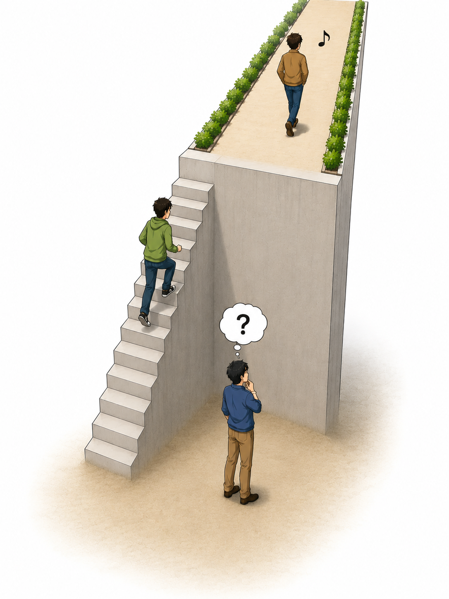

趣味で英会話を始めた頃、私は単語のスペルと発音の間にある規則性に気づき、独自の「拝借式米語発音記号」を編み出しました。
会話の例文を音読することは、第二言語（ここでは母語以外に学ぶ言語）の習得に不可欠です。この記号を音読に活用し、これから英会話を始める方々に伝えたいという思いを、私はずっと温めてきました。
このたび、ようやくその解説を書き始めることになりました。しかし、記号の仕組みを伝えるためには、それに付随するさまざまな事柄についても説明する必要があることに気づきました。
本書は、趣味として英会話を始めたい方や、今度こそ学習を継続して力を向上させたい「大人の初心者」を対象としています。
英会話学習を第三者の視点から考察する本コラム集が、少しでも皆さんの力になればという一心で執筆しました。
英会話初心者の水準を建物の1階、日常会話ができる水準を2階とするならば、本書は皆さんが上階へ上がるための「階段」となるようなイメージで作成しています。
継続的な練習とともに、本書が皆さんの最初の一歩のお役に立てることを願っています。
世の中には、さまざまな趣味や教養としての習い事があります。
ここでは「英会話」を趣味や教養の一つとして捉え、他の習い事との共通点などから考えてみたいと思います。
お稽古ごとは、スポーツを含めて基礎練習が大切です。また、習慣として続けることも大切です。
つまり、いかに基礎を習得するか、そして練習を長続きさせるためにはどのような工夫が必要なのかを考えることが大事だといえます。
英会話教室やスマートフォンアプリの宣伝で、英会話を始めようとする方に向けた、次のような動画広告を目にした方もいらっしゃると思います。
筆者の考えでは、大人に効くそんな魔法は存在しません。
地道に練習して、三歩進んで二歩下がる。そのくらいの感覚ではないでしょうか。
ピアノのような楽器と同様、幼少の頃から習い始めるのと、大人になってから始めるのとでは状況が異なります。
ゴルフやテニスの愛好者の多くは、大人になってから始められると思います。
素振りによる正しいフォームの練習や、ボールを使った練習を繰り返してから、実際にプレー（試合など）するという流れになります。
講師といきなり英会話をすることから練習を始めるのは、ゴルフなら実際のコース、テニスなら実際のコートで、いきなり試合をすることに相当するのではないでしょうか。
筆者は、それでは効率が良いとはいえないと考えています。
ところで、現代は「英会話学習天国」です。インターネットのおかげです。
動画や教材が豊富にあり、書籍も数多くあります。
また、英会話を自分で習得する必要性自体も、以前より低くなった時代ともいえます。自動翻訳アプリなど携帯端末機器やメガネにあるからです。
第二言語を学習するには良い環境が整っていて、また、学習しなくても困らない時代になるといっても過言ではないかと思います。
いずれにせよ、あとは本人の動機や興味の度合いということになるでしょう。
英会話の練習を始めるにあたり、どうしても英会話の習得が必要だという状況にある方も、人生をより豊かにするために英会話を学習される方も、それぞれの目的や目標に向けて、最後まで読んでいただければと願っています。
筆者が学校で英語の授業を受け始めたのは中学校からでした。2020年からは、小学校高学年の英語が正式な教科となり、成績がつけられるようになったようです。
ここでは「英語」を学校で習う科目の一つとして捉え、他の教科との共通点と、「英会話」との違いから考えてみたいと思います。
他の教科との共通点をひとことでいうと、「成績がつく」ということです。授業中の態度や成果物、試験結果などが評価され、数値化されます。
英語を第二言語として学ぶということは、正しい文法や単語（表現）を使うための知識を身につけることでもあります。英語の学習項目は、「読む・書く・聞く・話す」の4つに分類できます。この4つのうち、英会話で主に必要となるのは「聞く・話す」です。
成績をつけるとなると、公平な採点が必要です。テストや試験のそれぞれの回答について、「何が正解なのか」「どのような回答が模範解答なのか」を定めることは重要です。これは英語の資格試験でも同じことがいえると思います。
ところが、音（音声）は目に見えず、聞き終わった後には形として残りません。そのため、「聞くこと」「話すこと」の能力を測るのは厄介です。正解の基準を設定することも容易ではありません。
特に、大量の受験者それぞれの「話す」能力を公平に測定することには、さまざまな難しさがあるでしょう。
その結果、試験では「読む・書く」ことが重点的に取り上げられるのは、ある意味で必然なのかもしれません。
日本語は英語とは言語の系統も文法も異なります。英単語（表現）も非常に多く、英語の試験問題を作るための材料には事欠きません。
世界的な視点で見ると、日本人は英会話が苦手な方が多いといわれます。一方で、英語とは言語の系統も異なる日本語を母語としながら、英語の「読む・書く」といった能力については比較的高い水準にある、という見方もあります。
英会話は、相手との意思や意見を交換するための道具です。
「伺いたいことを聞く」「伝えたいことを話す」。この繰り返しです。
科目としての英語の授業・試験と英会話の違いを、ひとことで表現すると「異なるスポーツ競技」のようなものだと筆者は考えます。
英会話は能力を測る競技ではありませんが、スポーツに例えるなら「テニス」が近いと思います。
テニスでは、相手から来たボールに即座に反応し、相手に返す必要があります。英会話も同じように、相手の発言を聞き、その場で理解し、自分の言葉を返す必要があります。耳と口が頼りです。
一方、科目としての英語は「ゴルフ」に近いのではないでしょうか。
ゴルフでは、じっくりとボールと向き合い、どのように対応するかを考えることができます。学校の英語試験でも、問題を読んで考え、ある程度配分の時間をかけて回答することができます。またテスト試験の点数配分は耳と口を使わなくとも落第点は免れると思います。
だから、「ゴルフは得意だけれどテニスは苦手」という人がいても、あるいはその逆であっても、決して不思議ではありません。英語の試験は得意だけれど英会話は苦手、またはその逆ということも、十分に筋が通ると思います。
この例え話から、英語と英会話には共通点があることも分かります。
それは、スポーツ選手が鍛えた「体力と体幹」に相当するものです。
英語でいえば、それは「英文法と英単語（表現）の知識」に当たります。
「英会話」という言葉の定義を検索してみました。
「英語を用いて即時に意思疎通を行う、口頭でのやり取り」という説明がありました。
昨今、レストランやコンビニエンスストアなど、さまざまな場所で日本語を話し働いている外国人の方を目にします。
ひとこと、ふたこと話をすると、「きっと日本語は第二言語なのだろうな」と思うことがあります。
そして、英会話が趣味の筆者は、「この方は日本語を結構勉強されている」と感心させられることが多々あります。
ここで着目したいのは、「日本語の母語話者（ネイティブスピーカー）ではないにもかかわらず、相手の言葉を聞き取り、こちらの話すことも支障なく理解してくれる」という点です。
これは、英会話の習得を考えるうえで参考になる気がします。
まとめると、次の2点です。
もちろん、実際の会話では聞き返すこと自体が悪いわけではありません。ここでいう「聞き返すことなく」とは、必要以上に聞き返さなくても相手の話を理解できる、という意味です。
日本語は、英語などと比べると、使われる音の種類が少ない傾向があります。
そのため、日本語には存在しない音を聞いたとき、日本語の中でそれに近い別の音として聞こえてしまうことがあります。
ここで仮想の話をしてみます。
「か」という発音は存在しますが、「が」という発音は存在しない、という言語があるとします。
その国の人が日本語を勉強すると、次のように聞こえてしまうかもしれません。
①「カラスが飛んできて窓のガラスに当たった。」
↓
②「カラスか飛んできて窓のカラスに当たった。」
※本来①のように聞こえるはずが、②のように聞こえてしまうという仮想例です。
英語で使われる音の種類と日本語の音の種類を比べると、日本語には存在しない英語の音がいくつもあります。
例えば、英単語のスペルに出てくる ”R”や”TH” に対応する音などです。
母音についても、日本語の「ア」に近い音だけを見ても、英語には複数の異なる音があります。
こうした「日本語にはない英語の音」があることは、英会話を学ぶうえで重要なポイントになります。
「会話は言葉のキャッチボールである」というフレーズもよく耳にします。キャッチボールのように相手が捕れる範囲内に収まるようこちらから言葉を投げる。相手が自分へ投げた言葉もしっかり受け止めなければなりません。
これらを第二言語の習得する上で解釈するなら
…といえます。
ここで少し視点を変えてみましょう。日本語を学びたい外国人がいたら、あなたはまず何を教えますか？
筆者なら、五十音表を覚えてもらうところから始めます。できれば平仮名と片仮名を、少なくともローマ字を覚えてもらいたいところです。
例えば、「おはようございます。お出かけですか？」という日常の挨拶を教えるとします。文章に振り仮名が付いていれば、読み方を確かめながら声に出すことができます。文字と音を結び付けることは、自分が話すときにも、相手の話を聞くときにも役立ちます。
日本語の文字には、漢字、平仮名、片仮名があります。漢字は「手紙」「上手」「下手」のように、同じ文字でも言葉によって読み方が変わることがあります。一方、仮名は基本的に、それぞれの文字に対応する音を表しています。漢字に適切な振り仮名が付いていれば、文章の読み方も分かりやすくなります。
こう考えると、仮名は日本語の発音を知るための、身近で便利な手掛かりです。いわば、日本語用の「発音記号」と呼べるのではないでしょうか。
では、五十音表をローマ字で眺めてみましょう。
「あ・い・う・え・お」は、A・I・U・E・Oという母音で表されます。一方、「か・さ・た・な・は・ま・や・ら・わ」などは、K・S・T・N・H・M・Y・R・Wといった子音と母音の組み合わせで表されます。「が」「ざ」などの濁音にはG・Z、「ば」「ぱ」にはB・Pなどが使われ、「きゃ」「りゃ」などの拗音も、子音と母音の組み合わせで表せます。
つまり、日本語の音は「あ・い・う・え・お」の母音を基本とし、「ん」などを除けば、多くの場合、子音と母音が組み合わさってできています。
英語と比べると、日本語の発音には、こうした組み合わせによる規則性があります。そのため、仮名を手掛かりにして文字と音の対応を覚えることは、日本語を学ぶ人にとって大きな助けになります。
では、アクセントや抑揚はどうでしょうか。
日本語には、同じ「はし」でも「橋」「箸」「端」のように、アクセントによって区別される場合があります。ただし、アクセントには地域差もあり、実際の会話では、標準的なアクセントと異なる話し方をする人もいます。
もちろん、自然な発音や抑揚を身に付けることは大切です。しかし、アクセントが多少不自然だからといって、必ずしも会話が成り立たなくなるわけではありません。外国人が日本語を話す場面でも、伝えたい言葉を正しく発音できれば、十分に意思疎通できることが多いのです。
今回、普段何気なく使っている仮名を、発音という視点から眺め直してみました。そこから見えてきたのは、日本語の音の基本的な仕組みと、発音を学ぶうえで文字が果たす役割です。
英語の発音には日本語にはないものがあると以前のコラムに書きましたが、日本語と英語の発音の違いをもう少し深堀りしたいと思います。
アニメなどで欧米人が日本語を話すシーンを思い起こして下さい。欧米人の役になりきって下記の台詞(セリフ)を声に出してみましょう。
「日本の食べ物は大変美味しいです。特に私はラーメンが好きです。」
例えばこんな感じです。「ニホンノタベモノワ タイヘンオイシイデース ...」
きっと強い抑揚のある、声が高くなったり戻ったりの発音で読まれたのではないでしょうか。
これは母語(欧米人の方の母国語)の影響だと筆者は考えます。例えば英語では基本的に1つの単語には必ず１箇所以上のアクセントがあります。
つまり母語では会話で話す際に頻繁に音の強弱が現れるので、日本語を話す際も母語を話すときの癖や習慣が現れたといえます。結果、日本人の方が欧米人のモノマネをすると声に大きな抑揚が現れるといえます。
日本語は話す際の抑揚やアクセントが、英語と比べずっと少ないです。だからだと思いますが、日本人の方が英語を話す際は本来よりも平坦に話されているように聞こえます。これも母語を話すときの癖や習慣が現れた結果といえます。
このように各国の人々が第二言語を話す際は、普段(母語)の会話の声の出し方の癖や習慣に伴って発話されることは自然といえるでしょう。
実際、第二言語として英語を話されている方々とお話しを交わす機会に「この方はたぶん〇〇の国の人だろう」と感じることがあります。
皆さんも今後、英会話を通じて世界諸国の方々と交流する際にそのような経験をされると思います。
この点で念の為、お伝えしたいのは「標準的な英語の発音はありますが、間違った英語の発音は無い」ということです。これは「正しい文法や発音記号に沿った発話の英会話であれば、それぞれの母語の癖や習慣が混じっても間違った英語にはならない」といえます。
そういう意味では国や言語の数だけ英語の種類がある、といえるかもしれません。
ちなみに、インドで使われている英語はイギリス英語が基であるはずですが、イギリス英語の発音・トーンとは少しかけ離れています。世界的人口でみるとインド英語の人口は全体の１割以上だそうです。
さて、もう一つ日本語と英語の発音の違いを”うどん”と”そば"で考察したいと思います。わかりやすくそれぞれをローマ字で表してみます。
目的は日本語にはN以外の子音で独立して発音することはないが、英語の発音では子音が独立して発音されることを体感する為です。
そば ＝ SOBA 、うどん ＝ UDON
まずは”そ”に相当する”SO”という部分の”S”だけを発音してみてください。なんだか難しいですよね。
英単語の例として stop、drive、trouble を下記の表に列記しました。
下記の表の発音記号を着目ください。子音の”S”だけ、”B"だけ、”D"だけで次に母音が続いていません。日本語の話者には子音だけ発する練習が必要ということです。
(άの上にある斜めの線はアクセント(大きめに発する箇所)記号です。)
| 単語 | 発音記号・品詞 | 主要な意味 |
|---|---|---|
| stop ストップ |
-stάp-v.n | 止まる・止める |
| drive ドライブ |
-drάɪv-v.n | 車を運転する |
| trouble トラブル |
-trʌ́bl-n.v | 問題、苦労 |